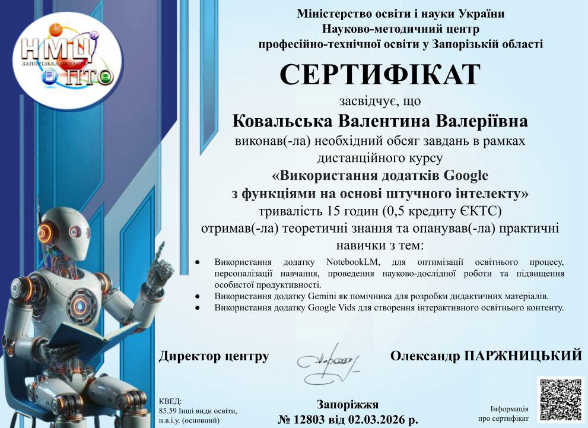
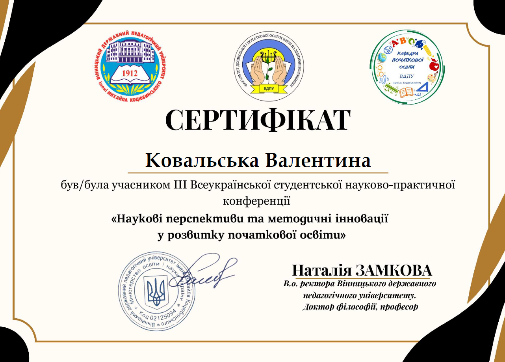
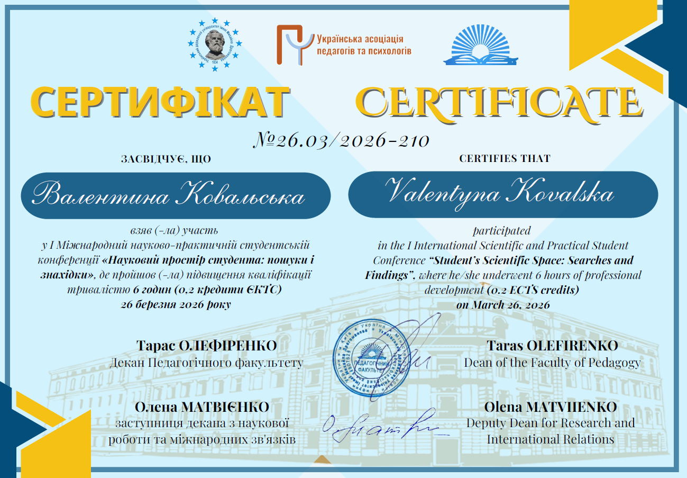

Навчання та професійне становлення
Я здобуваю освіту за напрямом початкової освіти та готуюся працювати з молодшими школярами у форматі Нової української школи. У навчанні поєдную теорію педагогіки, вікову психологію та практичну підготовку до занять у класі.
- Вивчення методик викладання основних предметів у 1–4 класах.
- Підготовка конспектів уроків, дидактичних ігор та наочних матеріалів.
- Постійне розширення знань через вебінари, онлайн-курси та педагогічні матеріали.
Курси, тренінги та підвищення кваліфікації
У таблиці нижче — мої навчальні активності та сертифікати:
| Назва курсу або заходу | Напрям | Рік |
|---|---|---|
| Використання додатків Google з функціями на основі штучного інтелекту | Цифрові технології та ШІ в освіті | 2026 |
| Наукові перспективи та методичні інновації у розвитку початкової освіти | Методика початкової освіти та інновації | 2026 |
| Науковий простір студента: пошуки і знахідки | Науково-дослідницька діяльність | 2026 |
Сертифікати підвищення кваліфікації
Підтвердження проходження курсів, тренінгів та науково-освітніх заходів:


